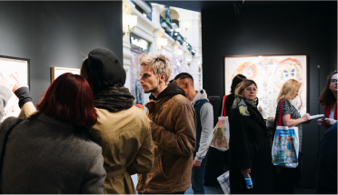

Арт-пространство
Текст про то кто мы такие креативное пространство у нас есть галлерея в которой можно тусить и слушать музыку но наше основное направление это продажа картин. Текст про то кто мы такие креативное пространство у нас есть галлерея в которой можно тусить и слушать музыку но наше основное направление это продажа картин. Текст про то кто мы такие креативное пространство у нас есть галлерея в которой можно тусить и слушать музыку но наше основное направление это продажа картин. Текст про то кто мы такие креативное пространство у нас есть галлерея в которой можно тусить и слушать музыку но наше основное направление это продажа картин
Арт-коворкинг
Текст про то кто мы такие креативное пространство у нас есть галлерея в которой можно тусить и еще слушать музыку но наше основное направление это продажа картин. Текст про то кто мы таки креативное пространство у нас есть галлерея в которой можно тусить и слушать музыку но наше основное равление это продажа картин. Текст про то кто мы такие креативное пространство у нас есть галлерея в которой можно тусить и слушать музыку но наше.

Семинары
Текст про то кто мы такие креативное пространство у нас есть галлерея в которой можно тусить и еще слушать музыку но наше основное направление это продажа картин. Текст про то кто мы таки креативное пространство у нас есть галлерея в которой можно тусить и слушать музыку но наше основное равление это продажа картин. Текст про то кто мы такие креативное пространство у нас есть галлерея в которой можно тусить и слушать музыку но наше основное направление это продажа картин. Текст про то кто мы такие креативное пространство.
Мероприятия
Текст про то кто мы такие креативное что пространство у нас есть галлерея в которой можно тусить и еще слушать музыку но наше основное направление это продажа картин. Текст про то кто мы таки креативное пространство у нас есть галлерея в которой можно тусить и слушать музыку но наше основное равление это продажа картин.
Интересное
 Instagram-интенсив «Теперь так»
Instagram-интенсив «Теперь так»В процессе работы над партитурами создаются ситуации «встречи», которые понимаются как метафора сложных динамических процессов определения, различения, совместности.
Афиша Инсталляции группы Numen/For Use «Оклеим Москву»
Инсталляции группы Numen/For Use «Оклеим Москву»Во время работы выставки ее посещение будет разбито на четыре акта. В каждом акте выставочное пространство будет менять свои очертания, заметки и артефакты будут сменять друг друга, создавая среду для исполнения партитур приглашенными танцовщиками.
Новости-  День открытых дверей в ARTE
В процессе работы над партитурами создаются ситуации «встречи», которые понимаются как метафора сложных динамических процессов определения, различения, совместности.
Афиша - Инсталляции группы Numen/For Use «Оклеим Москву»
Во время работы выставки ее посещение будет разбито на четыре акта. В каждом акте выставочное пространство будет менять свои очертания, заметки и артефакты будут сменять друг друга, создавая среду для исполнения партитур приглашенными танцовщиками.
Новости - День открытых дверей в ARTE
В процессе работы над партитурами создаются ситуации «встречи», которые понимаются как метафора сложных динамических процессов определения, различения, совместности.
Афиша - Instagram-интенсив «Теперь так»
В процессе работы над партитурами создаются ситуации «встречи», которые понимаются как метафора сложных динамических процессов определения, различения, совместности.
Афиша - Instagram-интенсив «Теперь так»
В процессе работы над партитурами создаются ситуации «встречи», которые понимаются как метафора сложных динамических процессов определения, различения, совместности.
Афиша - День открытых дверей в ARTE
В процессе работы над партитурами создаются ситуации «встречи», которые понимаются как метафора сложных динамических процессов определения, различения, совместности.
Афиша - Инсталляции группы Numen/For Use «Оклеим Москву»
Во время работы выставки ее посещение будет разбито на четыре акта. В каждом акте выставочное пространство будет менять свои очертания, заметки и артефакты будут сменять друг друга, создавая среду для исполнения партитур приглашенными танцовщиками.
Новости